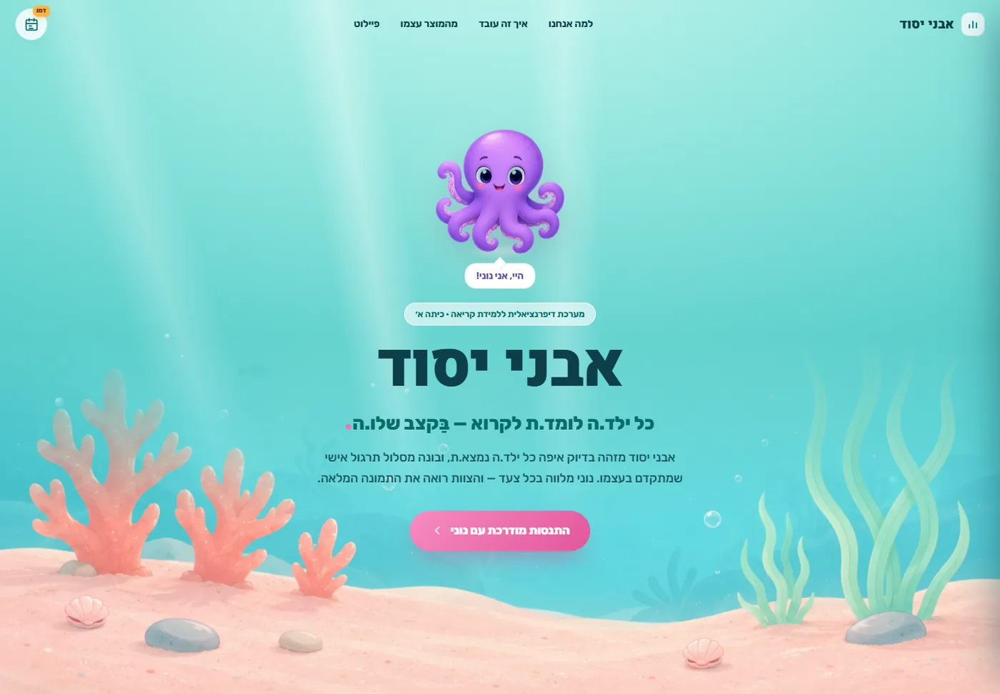
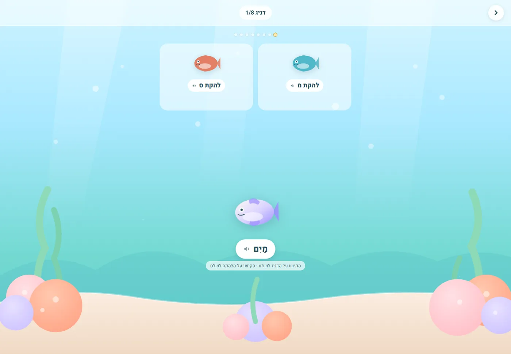
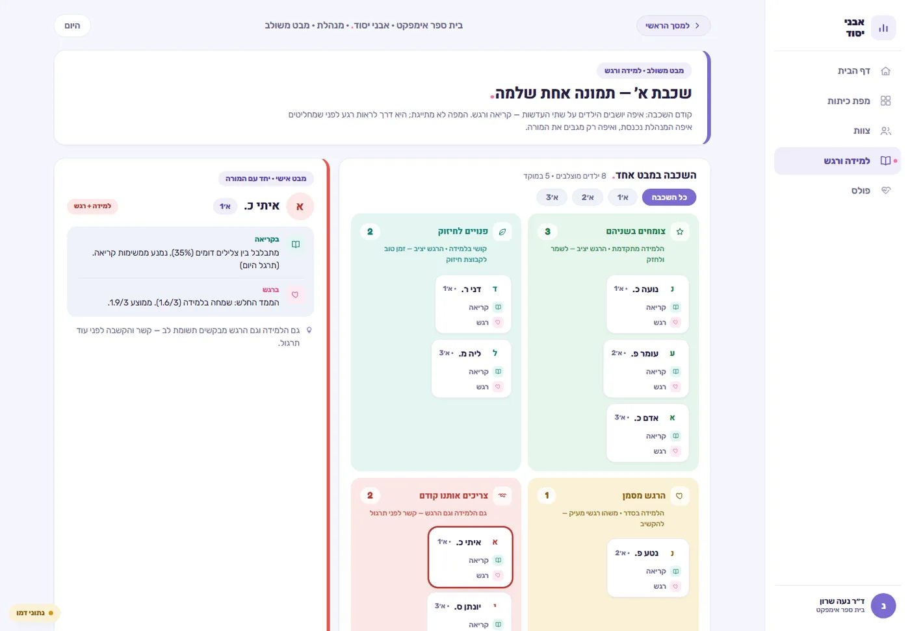

מפה במקום רשימה
ההתקדמות היא מסע: איים, שוניות ולגונות. כל תחנה היא מיומנות, והילד.ה רואה בדיוק כמה עוד נשאר.
מערכת דיפרנציאלית ללמידת קריאה בכיתה א׳. נוני, תמנון סגול, מלווה כל ילד.ה במסע במעמקי הים — והמערכת מזהה בכל רגע איפה הוא.היא נמצא.ת, מה כבר נסגר ומה השלב הבא.

שער הכניסה — נוני מקבל את פני הילד.ה
המערכת לא מחכה למבחן כדי לדעת מה קורה. כל תשובה מעדכנת את התמונה, והתרגול הבא נבחר לפי מה שבאמת חסר.
ההתקדמות היא מסע: איים, שוניות ולגונות. כל תחנה היא מיומנות, והילד.ה רואה בדיוק כמה עוד נשאר.
אין רמות קבועות מראש. כל טעות וכל הצלחה משנות את מה שיגיע הלאה — ילד.ה שנתקע.ה מקבל.ת עוד תרגול, וילד.ה שרץ.ה ממשיך.ה.
חלק גדול מהמשחקונים שמיעתיים. ילד.ה שעדיין לא מפענח.ת אותיות עדיין יכול.ה להצליח, ללמוד ולהרגיש שייך.ת.
לא ציונים ולא אחוזים: מה נסגר, מה עוד פתוח, ומה כדאי לתרגל מחר. בשפה של אנשים, לא של מערכת.


נשמח להראות לכם את המערכת מקרוב, ולדבר על איך היא נכנסת לבית ספר.
בואו נדבר